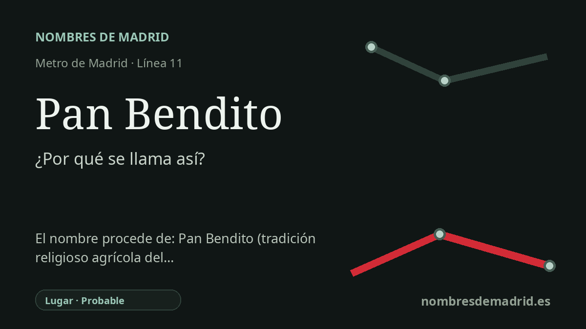

Publicado el · Investigación de Nombres de Madrid · Cómo verificamos cada origen · 11 fuentes consultadas
Respuesta rápida
La estación de Pan Bendito toma el nombre de la colonia y zona vecinal de Pan Bendito, en Carabanchel. El nombre antiguo suele explicarse localmente por los antiguos trigales y la idea del pan sagrado o bendito, aunque el origen exacto del topónimo sigue siendo una explicación popular más que un acuerdo municipal documentado.
La historia del nombre
La estación de Pan Bendito toma su nombre del lugar que la rodea: la colonia y zona vecinal de Pan Bendito, en Carabanchel. La estación está bajo la avenida de Abrantes, a la altura de la calle Besolla, y la documentación oficial de transporte la identifica como una estación de la línea 11 al servicio de esta parte del distrito.
El nombre es anterior a la estación de Metro. Los relatos locales lo explican a partir del paisaje que precedió a los bloques modernos: campos de trigo en el borde de los antiguos Carabancheles, con los que se podía hacer pan. En esa explicación, Pan Bendito une el pan con un adjetivo de resonancia religiosa: el pan como alimento sagrado o bendecido.
El barrio moderno se formó mucho después, dentro de la crisis madrileña de vivienda del siglo XX. Tras la anexión de Carabanchel Alto y Carabanchel Bajo a Madrid el 29 de abril de 1948, el distrito recibió migración obrera y operaciones de realojo. Los documentos municipales y vecinales describen la Colonia de Vista Alegre y la Unidad Vecinal de Absorción de Pan Bendito como áreas de vivienda provisional desarrolladas en el periodo 1957-1963 para familias trabajadoras y posteriormente incorporadas a programas de remodelación de barrios.
La llegada del Metro fue un hito simbólico dentro de esa historia urbana. La Comunidad de Madrid fecha la puesta en servicio del tramo Plaza Elíptica-Pan Bendito de la línea 11 el 16 de noviembre de 1998, con tres estaciones: Plaza Elíptica, Abrantes y Pan Bendito. Pan Bendito fue terminal hasta la ampliación de 2006 hacia Carabanchel Alto, de modo que el nombre del barrio marcó durante unos años el final de la línea.
La explicación pública más prudente tiene, por tanto, dos niveles: la estación se llama así por el topónimo Pan Bendito, y el topónimo se entiende localmente como un nombre ligado al pan, al trigo y a una carga religiosa. La afirmación concreta de que procede de la costumbre eclesiástica de repartir pan bendecido es posible, porque esas tradiciones existen en España, pero no se ha encontrado una fuente que vincule directamente esa costumbre con este topónimo madrileño. La explicación de los trigales está mejor atestiguada en fuentes locales y periodísticas, aunque tampoco queda demostrada por un documento original de denominación.